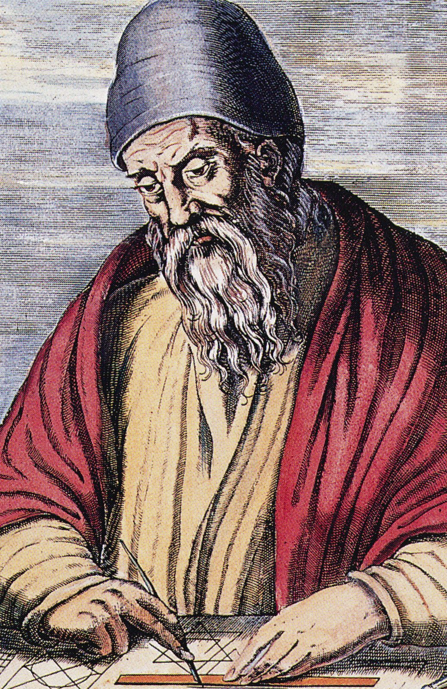
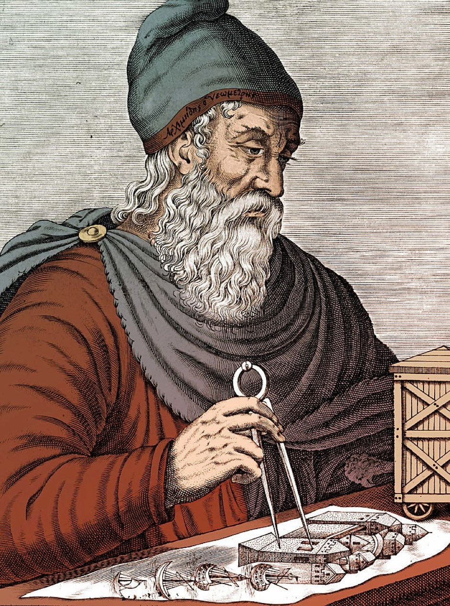

Matemática
A matemática é uma ciência que estuda as relações entre quantidades, formas, espaços e outras entidades abstratas. Ela se divide em vários ramos, cada um com seus próprios objetos, métodos e aplicações. Neste texto, vamos falar sobre quatro desses ramos: a geometria analítica, a plana, a espacial e a financeira. A geometria analítica é o ramo da matemática que estuda as formas geométricas usando um sistema de coordenadas e equações. Ela permite representar pontos, retas, curvas, planos, superfícies e sólidos no plano ou no espaço, e calcular suas propriedades, como distâncias, ângulos, áreas, volumes, etc. A geometria analítica também se relaciona com a álgebra, a análise e a física.. A geometria plana é o ramo da matemática que estuda as formas geométricas que estão contidas em um plano, como pontos, retas, segmentos, ângulos, polígonos, circunferências, etc. Ela usa conceitos como congruência, semelhança, simetria, paralelismo, perpendicularismo, etc. A geometria plana também se relaciona com a lógica, a aritmética e a trigonometria. A geometria espacial é o ramo da matemática que estuda as formas geométricas que estão no espaço tridimensional, como pontos, retas, planos, prismas, pirâmides, cilindros, cones, esferas, etc. Ela usa conceitos como posição, orientação, projeção, interseção, etc. A geometria espacial também se relaciona com a álgebra, a análise e a física. A matemática financeira é o ramo da matemática que estuda as operações financeiras, como juros, descontos, taxas, inflação, investimentos, etc. Ela usa conceitos como capital, tempo, valor presente, valor futuro, taxa de juros, etc. A matemática financeira também se relaciona com a economia, a contabilidade e a administração.Grandes Figuras
Rene Descartes: Pai da Geometria Analítica

Euclides: Pai da Geometria

Arquimdes: Importante físico e matemático
Leonardo Fibonnaci: Primeiro grande matemático da idade média